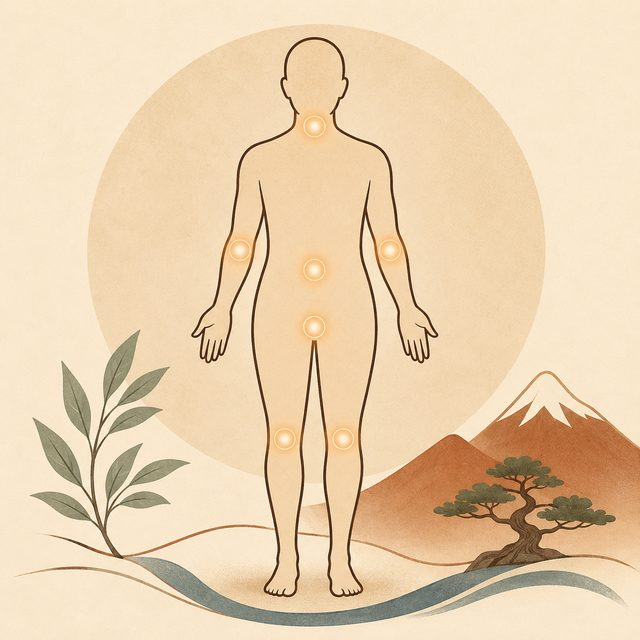
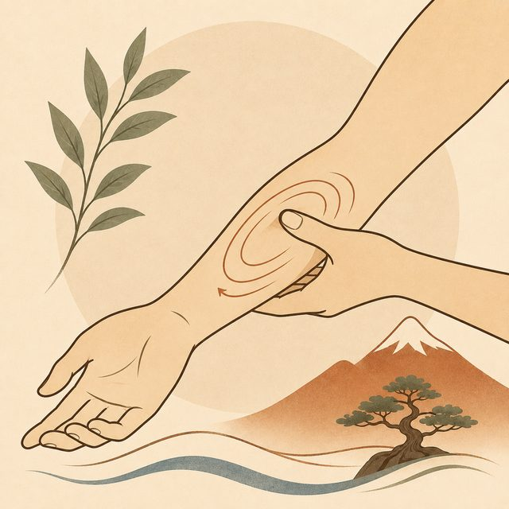
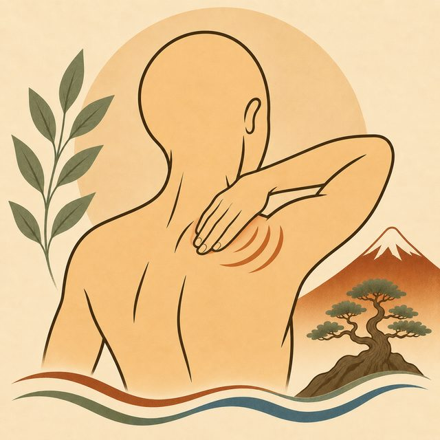
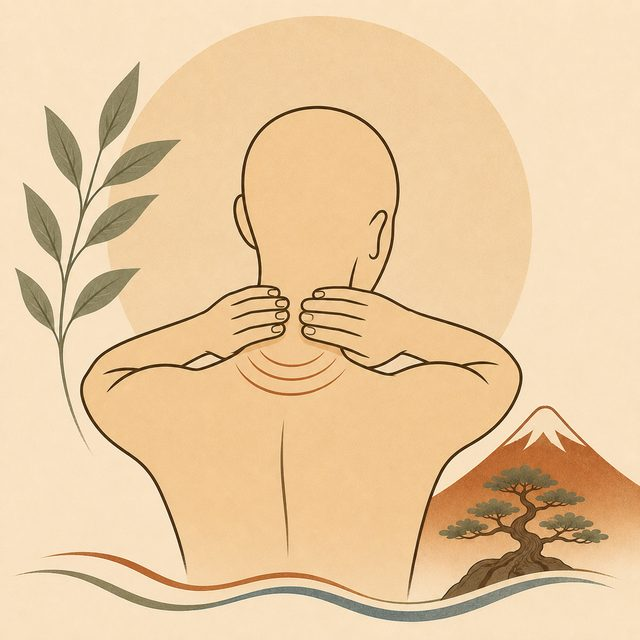
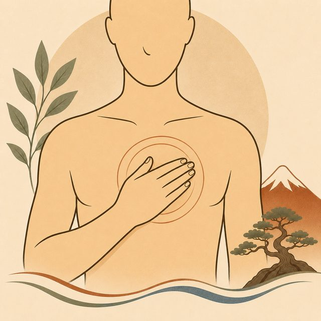
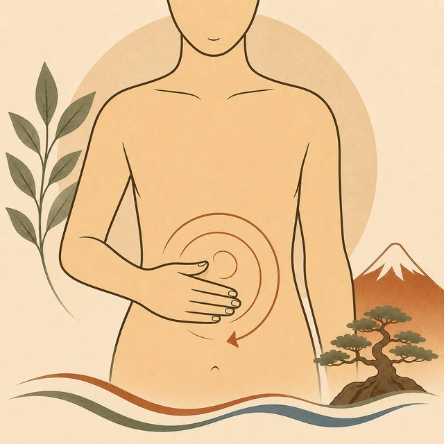
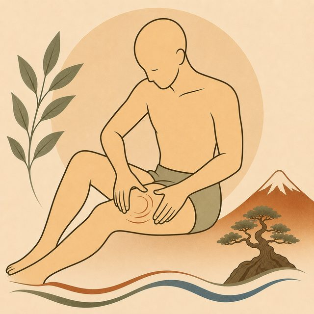
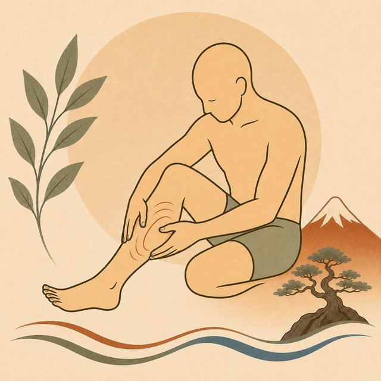

Bodywork
A region-by-region guide to working on your own tension between sessions. Start with the areas to approach carefully below — they're worth knowing before anything else, since they cover the whole body rather than one region at a time.

These are spots where a nerve, artery, or vein sits close to the surface with little muscle to cushion it — what massage therapists call endangerment sites. They're not off-limits, but they call for light pressure only, never sustained deep pressure. The regions below reference the ones relevant to each area.

Work along the forearm from wrist toward elbow, pressing with your thumb or fingers and pausing on any tender spot for 10–30 seconds, or use small kneading circles. For the hand, work between the finger joints and across the palm.
Stroke toward the elbow, not away from it — this follows the natural direction of venous and lymphatic drainage back toward the heart.

Reach across with the opposite hand and knead the meaty muscle between your neck and shoulder (upper trapezius). Work the front of the shoulder joint and whatever you can comfortably reach around the shoulder blade.
Small kneading circles work better here than long strokes — this muscle responds well to sustained, gentle pressure on tender spots.

Work the back and sides of the neck and the base of the skull with your fingertips, or lean into a tennis ball against a wall for the muscles alongside your upper spine.
Small circles or sustained holds on tender spots, moving slowly.

Massage the chest muscles (pectorals) working from the breastbone outward toward the shoulder — useful for the tightness that comes with rounded-shoulder posture.
Outward, from center to shoulder, with flat fingers or knuckles.

Gentle circular strokes with a flat hand, generally moving clockwise — this follows the natural path of the large intestine and is commonly used for digestive comfort. Keep pressure light throughout.
Clockwise, light pressure, slow pace.

Knead the front of the thigh (quadriceps) and back of the thigh (hamstrings) with your palm or a loose fist, working in sections rather than trying to cover the whole thigh at once.
Generally upward, toward the hip.

Knead the calf from ankle toward knee. For the feet, roll the sole over a ball or bottle, and use your thumbs to work the arch. Gentle circles at the ankle joint help with mobility.
Calf: ankle toward knee. Foot: whatever feels good — this area responds well to broad, exploratory pressure.
This guide is for general wellness self-care and isn't a substitute for professional bodywork or medical advice. If you're pregnant, recovering from an injury or surgery, or have a condition like a blood clot, osteoporosis, or a vascular issue, check with a doctor before self-massage — and always stop if something feels sharp, numb, or wrong rather than just tender.